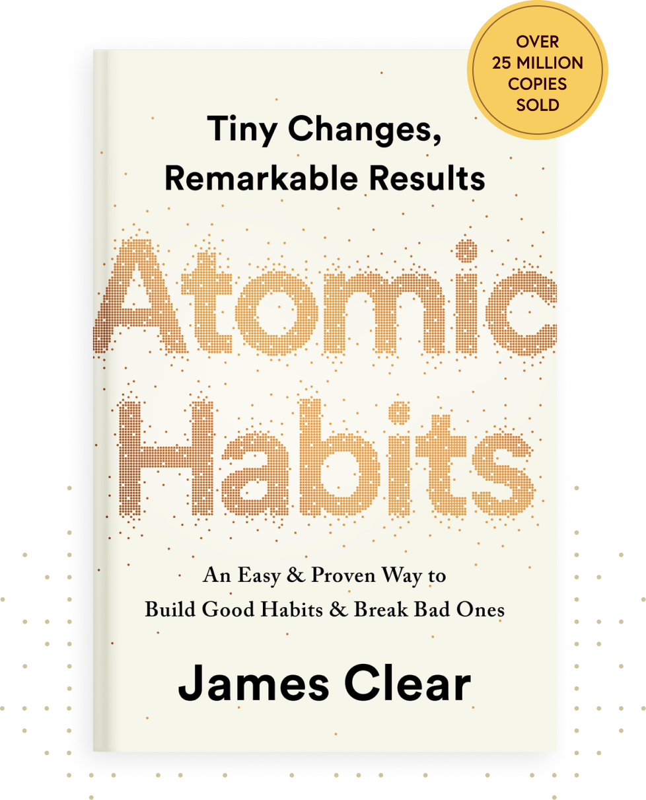

Atomic Habits
By James Clear
The official companion to the #1 worldwide bestseller is the next step in your habits toolkit. Guided journal prompts will help you engage with your habits and the forces that impact them. Thought-provoking exercises allow you to implement the Atomic Habits theories and see your life transform. This workbook takes the reader from understanding habits to living them. James Clear’s system helps good habits emerge naturally while unwanted habits fade away.
The Secret
By Rhonda Byrne
This book centers around the Law of Attraction, which posits that like attracts like and that our thoughts and feelings shape our experiences. It outlines a creative process involving asking, believing, and receiving, along with practices like visualization and gratitude to manifest desires in various life areas.
The 7 Habits of Highly Effective People
It is rightly said that habits make or break a man. If you want to know why you are not doing something right, sometimes all you need is to perform an analysis of your habits and consider altering them. Because sometimes it’s not about what you do, but more about how you do it! And that’s where your habits play a very important role. ‘The 7 habits of Highly Effective People’ is a book that aims at providing its readers with the importance of character ethics and personality ethics. The author talks about the values of integrity, courage, a sense of justice and most importantly, honesty. The book is a discussion about the seven most essential habits that every individual must adopt to in order to live a life which is more fulfilling.